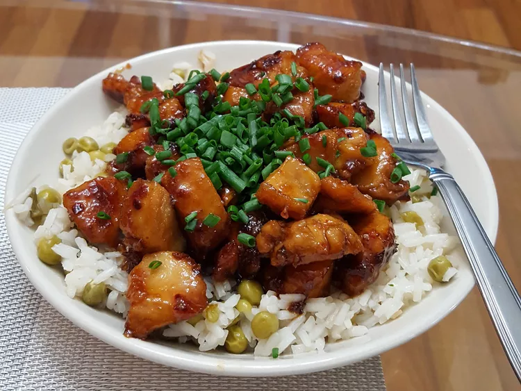

Home
Honey Glazed Chicken

How To make Honey Glazed Chicken at your home
This honey chicken dish is easy to make with just 5 ingredients. I've used this recipe for years, and my family requests it often. Delicious served on steamed rice and garnished with sliced green onions.
Ingredients
- ¼ cup honey
- 2 tablespoon soy sauce
- ⅛ teaspoon red pepper flakes
- 1 ½ tablespoon olive oil
- 2 skinless, boneless chicken breast halves, cut into bite size pieces
Directions
- Step 1
Gather all ingredients

- Step 2
Whisk honey, soy sauce, and red pepper flakes in bowl, set aside.

- Step 3
Heat olive oil in a skillet over medium heat; cook and stir chicken in hot oil until lightly brown, about 5 minutes.

- Step 4
Pour honey mixture into the skillet; continue to cook and stir until chicken is no longer pink in the center and sauce is thickened, about 5 minutes more.

- Step 5
Serve hot and enjoy
